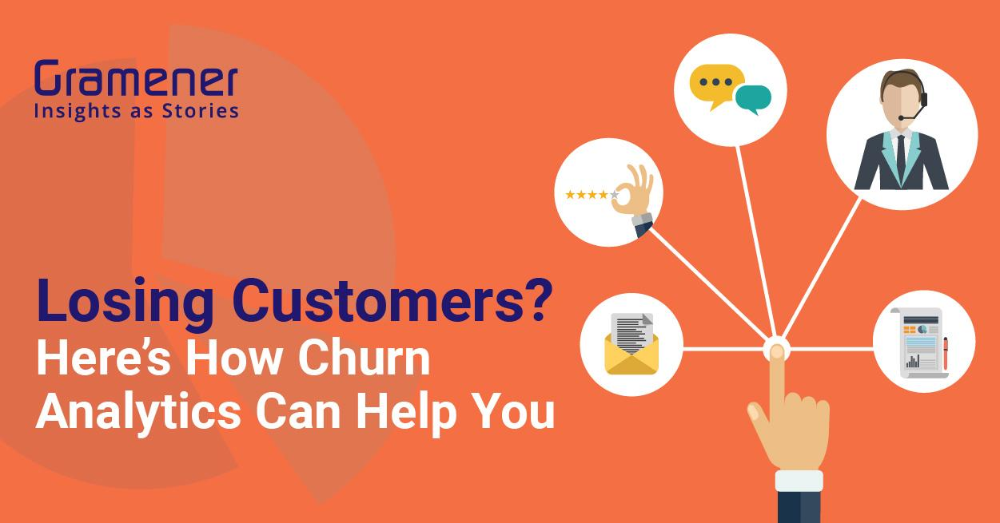
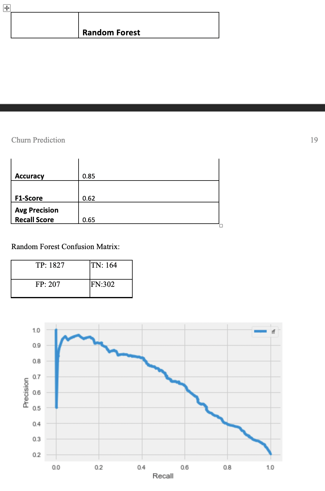

Customer Churn Prediction using Machine Learning

{kind=link}
View code on github
Introduction
For any service or product-based organization customer churn is a major issue. When a customer ends a subscription or service and decides to use another service provider, it hits the company’s revenue directly. Customer retention is a key to grow the business. The key to retaining existing customer is to understand the grey areas that customer not happy about and identify high risk group of customers who have high chance to leave. Keeping the high-risk group happy by giving some special perks, can help retaining them. Machine Learning can use historical banking customer data and find a pattern between various attributes like age, gender, tenure, credit score, account balance etc. with churn outcome.
The aim of this project is to build an effective model to detect banking customer segment who are more likely to close their account. Banks can look at this group of people and do some targeted promotions like offering low APR loans, special rewards depending upon the account tenure etc. Here we aim to build Artificial Neural Network, Random Forest, Gradient boosting, and Naïve Bayes and compare their performance.
Data Used
This project will use banking domain data. Specifically, it will use a bank’s customer account details who closed their account and who still have an open account with the bank. There are various factors that can influence a customer to close his bank account. Churn_Modelling dataset from Kaggle collected information about 10000 customers along with the churn outcome. This will be used to perform EDA and build a supervised model.
1. CreditScore: ranges between 350 to 850. Shows customer’s creditworthiness. 2. Geography: customers country 3. Gender: Male/Female 4. Age: ranges between 18 to 92 years 5. Tenure: 0 through 10 6. Balance: ranges between 0 to 250000 7. NumOfProducts: count of banking products held by the customer 8. HasCrCard: customer has credit card or not. 9. IsActiveMember: Is customer active. 10. EstimatedSalary: salary of the customer 11. Exited: Customer closed the account or not
- Dataset: Churn Modelling
Technology Used
- Python3
- Jupyter Notebook on Anaconda
Proposal
Customer Churn is percentage of customer that stopped using a company’s product or service. It hurts company’s direct revenue. It is important to control the customer churn for any growing business.
It is costlier to attract new customer than retaining existing customer. 5% increase in customer retention will increase 25% profit. Returning customer will likely spend 67% more on company’s service.
One way to stop customer churn is to provide attractive benefit to all existing customers. But this will increase in company’s expenditure and eat up the profit margin. So, it is important to analyse customer churn reasons, identify the high-risk group and target that group with promotions and offers. But analysing different factors manually is time consuming and requires highly trained resources.
Machine Learning can help in this situation. Machine Learning can be used to analyse different attributes of bank account details and establish a pattern with account closing or customer churn. There are various classification models such as Logistic Regression, Random Forest etc. can be used to predict whether an account holder will likely close his/her account in future or not. Existing customer’s data can be used to train these models and then use the trained models to predict churn. It can help banks to take care of the unhappy group by promoting personalized offers.
Data
I’m using Churn_Modelling.csv dataset from Kaggle. This dataset contains 10000 observation. It contains 13 input attributes and 1 output attribute that confirms whether the customer closed the account or not (1 – account closed, 0 – customer retained). Among these 13 input attributes RowNumber, CustomerId, Surname etc. are not relevant for my analysis as these are mostly unique identifier of the customer and doesn’t add any value to churn analysis. Other attributes may have some impact on customer churn. These attributes are:
{kind=link}
{kind=link}
From the above output class bar chart, we can see that this dataset is imbalanced. This dataset contains details about 10000 customers out of which 7963 customer has an active account and 2037 customer has closed their account. As we can see, this dataset is not balanced – 79.63% is majority class (no churn) and 20.37% is minority class(churn).
{kind=link}
Data Cleaning
I have used pandas profiling to gain basic understanding of the data. Panda’s profiling report shows that none of the attributes contain null or missing value.
{kind=link}
{kind=link}
{kind=link}
We can see that age, NumOfProducts, IsActiveMember etc. have greater influence on ‘Exited’ (churn outcome) output.
WFor the ease of our analysis, I have converted character string values into one-digit numbers for certain variable. E.g. ‘gender’ values have been converted into 1 (Male) and 2 (Female). Similarly, ‘Geography’ values have been converted into 1 (France), 2 (Germany) & 3(Spain).
{kind=link}
This plot shows that there is no outlier.
Exploratory Data Analysis
Performed EDA to find out impact of important attributes like age, gender etc. on Customer churn.
{kind=link}
We can see Germany has high churn rate as compared to other two countries.
{kind=link}
Above Gender plot shows that churn rate among female customers are more than the male customers.
{kind=link}
We can see, customers who are holding two products form the bank, are less likely to close their accounts. Whereas customers who have more than 2 products, are unhappy for some reason. It’s possible that the other service from the bank is not very good and customers want to close their account and move away.
{kind=link}
From the above age distribution plot, we can see that customers with age between 40-55yrs are at higher risk to close their account.
Data Preparation
Standardized the attributes values using RobustScaler() function. Divided training/test dataset into 75/25 ratio after preserving the minority/majority class balance using stratify option. Most of the models don’t do very good with imbalanced dataset. To resolve this issue, I have used SMOTE() function to oversample the minority class. After oversampling, we have 5972 observation in each class of training dataset.
Methodology
Our aim is to build a classification model that will predict banking customer churn. For this purpose, we are planning to use Naive Bayes, Random Forest classifier, Gradient Boosting and Artificial Neural Network.
Results
I have used sklearn’s GridSearchCV to fine tune the parameters for above model and then compared the results. We have used seeding for reproducibility.
I have plotted random forest results using CalibratedClassifierCV() function to know whether I have to perform any calibration or not. But based on the below plot, I have decided not to do any further calibration.
{kind=link}
{kind=link}
MBased on the average precision score, I have selected the best parameters for Random Forest, Artificial Neural Network and Logistic Regression classifier. Also based on the average precision score, we have selected Random Forest as our best model. We have then tested Random Forest models using our test dataset and calculated accuracy and f1-score, confusion matrix. f1-score is a harmonic mean of precision-recall. We have also produced confusion matrix for each test.
Best Model Selection
{kind=link}
Discussion
Proper detection customers who are at higher risk of churn, can help banks to retain their customers. This project can be used in other business areas like telecom, web subscription etc. where retaining customer is a key to grow the business.
Conclusion
- All the Models performed Pretty Well.
- Accuracy result from Cross validation is close for all the models
- Selected Random Forest model based on the Cross-Validation accuracy score and it is easier to explain to all stakeholders.
- Results from Test Dataset show that our decision to go with Random Forest is correct.
- Trained Random Forest model on Entire Dataset using best Parameter.